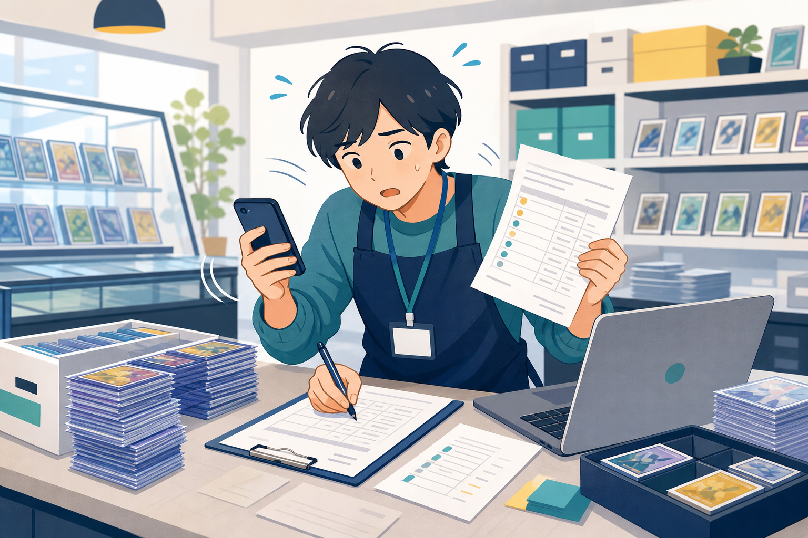
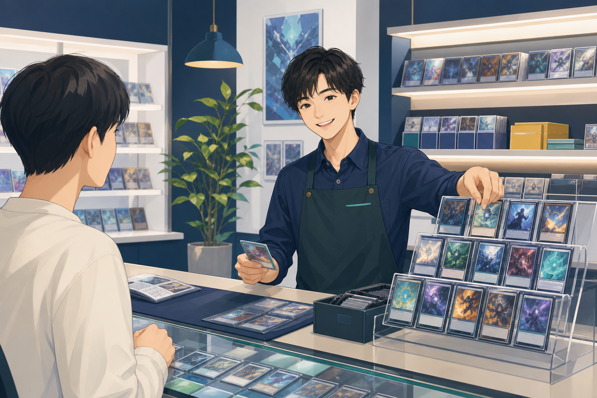

使わない機能まで、
契約に含まれていませんか？
POS買取在庫EC価格管理その他
大きなパッケージから、
使う機能は一部だけ
Modular DX for card shops
買取受付、在庫管理、相場・価格管理など、店舗に必要な業務機能を選んで導入お使いのPOSや通販システムを活かしながら、カドショのDXを進めます
自店に合う構成を相談する相談内容をもとに、必要なモジュールと連携方法を整理します
Everyday friction
買取受付、明細作成、在庫登録、相場確認
一つひとつは小さくても、毎日積み重なる入力・確認・転記
その時間が、目の前のお客様や売場からスタッフを遠ざけています

More time for cards
トレカDXが目指すのは、システムを増やすことではありません
スタッフがカードショップ本来の仕事に使える時間を増やすことです

Before / After
大きなパッケージから、
使う機能は一部だけ
店舗を中心に、必要なモジュールと外部サービスを接続
Module
機能名の多さではなく、毎日の仕事がどれだけ楽になるか
まずは課題に合うモジュールから始め、必要になったタイミングで追加できます
お客様の受付情報を整理し、スタッフが査定に入りやすい流れをつくります
査定結果の明細作成や過去の買取情報の確認にかかる作業を減らします
在庫数や原価など、日々増えていくカード情報の登録・管理を支援します
カードの相場を確認するための検索・比較作業をまとめ、判断を助けます
※掲載している4つは代表的なモジュールです
その他の機能、正式な提供範囲・仕様は店舗の運用に合わせてご案内します
Integration
POSやEC／通販は、外部サービスとの連携領域です
トレカDXの提供機能とは明確に区別し、現在の運用環境を確認したうえで連携方法を検討します
全面的な置き換えを前提とせず、店舗の現状から導入計画を組み立てます
現在利用しているPOSを確認し、必要に応じて連携方法を検討
既存の通販環境を活かすことを前提に、必要な接続を整理
店舗で利用中のサービスと運用を確認し、個別に対応方針を検討
外部サービスそのものをトレカDXの提供機能として案内しません
Born in a real card shop
トレカDXは、実際のカードショップ運営から生まれました
一般的な業務システムの都合ではなく、買取・在庫・相場確認が続く現場の動きから考えています
Start small
導入は店舗の優先課題から
今の運営を整理し、必要な機能と既存システムの関係を一緒に設計します
業務フローと利用中のシステムを整理
優先課題に合うモジュールを検討
既存POSやECを活かす方法を整理
運営の変化に合わせて構成を見直す
FAQ
入れ替えを前提にはしません
現在利用しているPOSと運用を確認し、必要に応じた連携方法を検討します
必要な機能から導入できることがトレカDXの基本的な考え方です
正式な提供範囲や導入条件は個別にご案内します
店舗の変化に合わせて構成を見直せる設計です
追加時期や条件は、利用状況を確認しながらご相談ください
EC／通販サービスそのものはトレカDXのモジュールではありません
既存の外部サービスを活かし、必要に応じて連携を検討します
Built from real card shop operations
全部を変える相談ではなく、今の店舗に何が必要かを整理するところから
現在のシステム環境と課題をお聞かせください